Фанатское творчество и мемы
Главная особенность Touhou Project — невероятно активное и свободное сообщество. Создатель серии ZUN с самого начала разрешил фанатам использовать персонажей, сюжет и музыку для собственного творчества (включая продажу фанатских работ на фестивалях вроде Комикета). Благодаря этому вокруг небольшой инди-серии выросла целая вселенная с десятками тысяч ремиксов, фанатских игр, анимаций и мемов, которые знают даже те, кто никогда не запускал оригинал.
Чем занимается сообщество
- Теневой клип «Bad Apple!!». Изначально это кавер на трек из старой части серии (Lotus Land Story), но всемирную славу он обрёл после выхода культовой чёрно-белой анимации в 2009 году. Сегодня этот клип используют как неофициальный «тест на железо», запуская его буквально на чём угодно: от калькуляторов и старых консолей до экрана «Диспетчера задач» и яблочных долек.
- Музыкальные ремиксы. Десятки музыкальных додзин-кружков записали тысячи альбомов с каверами на мелодии ZUN во всех мыслимых жанрах — от классики, джаза и фолка до тяжёлого метала, евробита и электроники.
- Фанатские игры (додзин-игры). Поклонники создают по вселенной полноценные игры самых разных жанров: метроидвании (Touhou Luna Nights), пошаговые RPG, головоломки и ритм-игры, многие из которых официально выходят в Steam и на консолях.
- Плюшевые игрушки Фумо (Fumo). Коллекционные мягкие игрушки персонажей с фирменным невозмутимым выражением лица, которые стали отдельным интернет-мемом и героями бесконечных фотосессий и гифок.
- Додзинси и юмористические зарисовки. Тысячи фанатских комиксов и коротких видео, где суровые дуэли заменяются бытовой комедией. Именно благодаря им закрепились главные шутки фандома — например, про вечно пустой ящик для пожертвований Рейму, клептоманию Марисы или «девятку» Чирно.
Галерея гифок
|
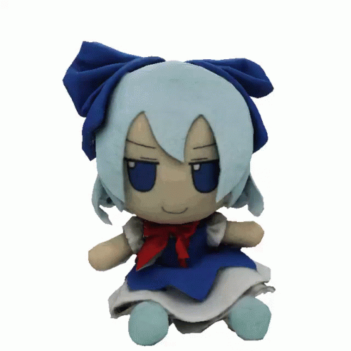 Гиперактивная Фумо Чирно |

Невозмутимая Фумо Мариса |

Bad Apple!! |

Будни Особняка Алой Дьяволицы |

Победный танец |
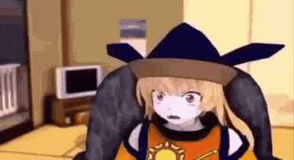 Слишком много знаний |
Анимированные изображения: творчество сообщества, найдено на Tenor
Галерея фан-артов
|
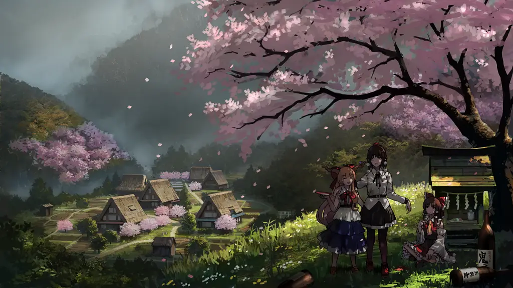 Неизвестный создатель (удаленный аккаунт) |
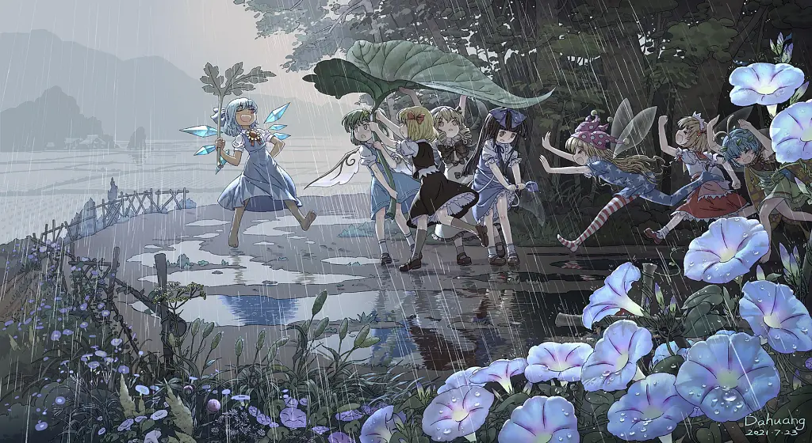 Рисунок сделан Dahuang (@dahuang) |
|
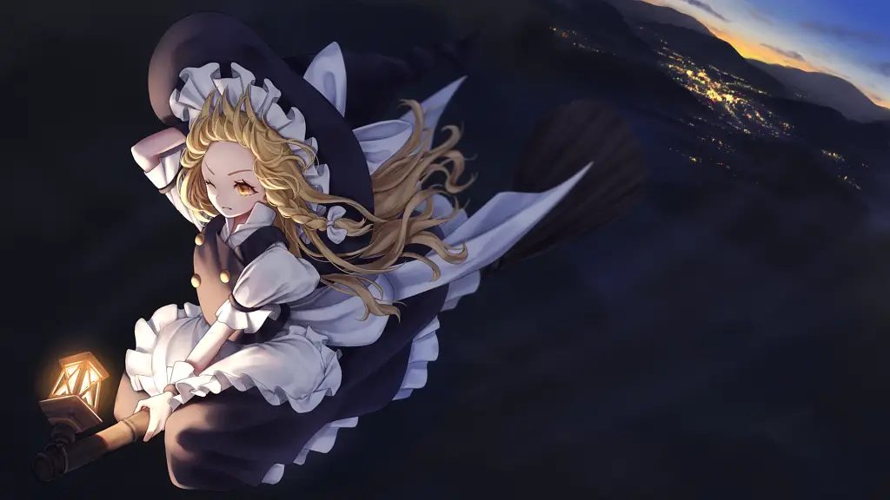 Рисунок сделан Torinari (@torinari) |
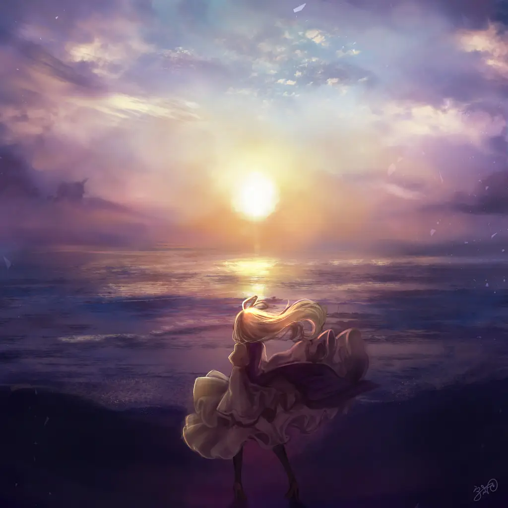 Рисунок сделан Nombre noir (@nombre_noir) |
|
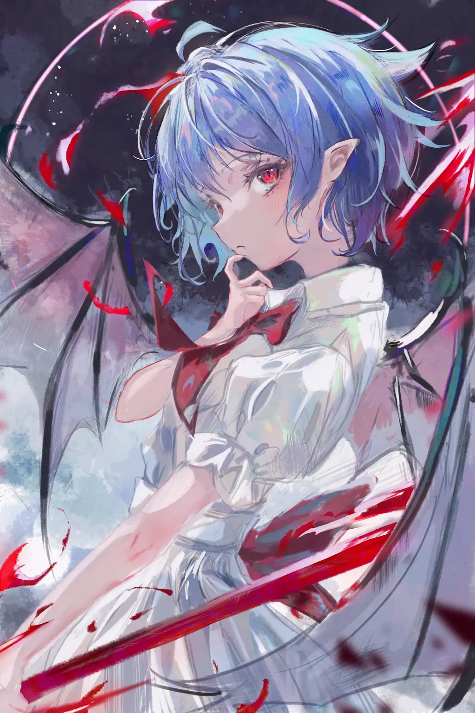 Рисунок сделан kh4c (@kh4c) |
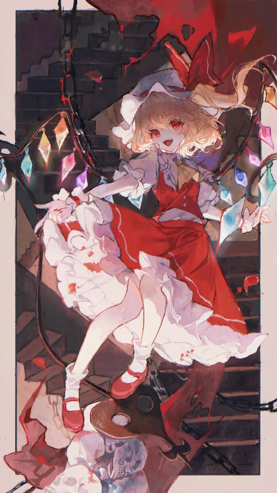 Рисунок сделан Matchach (@matchach) |
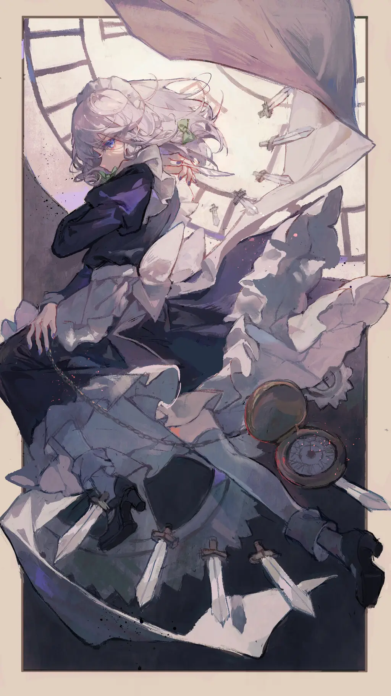 Рисунок сделан Matchach (@matchach) |
|
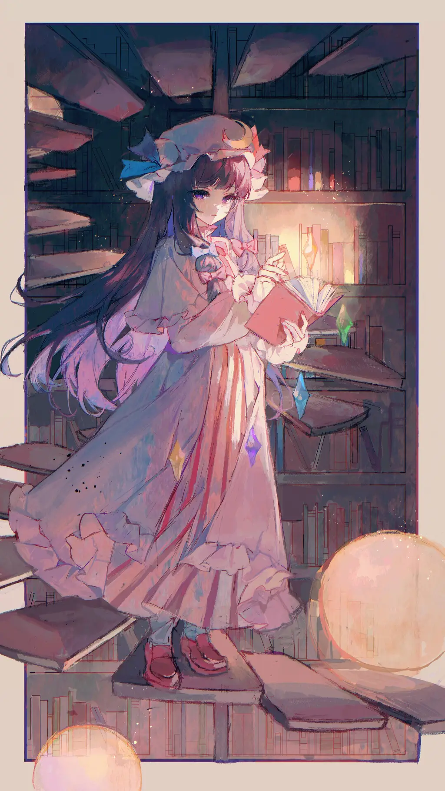 Рисунок сделан Matchach (@matchach) |
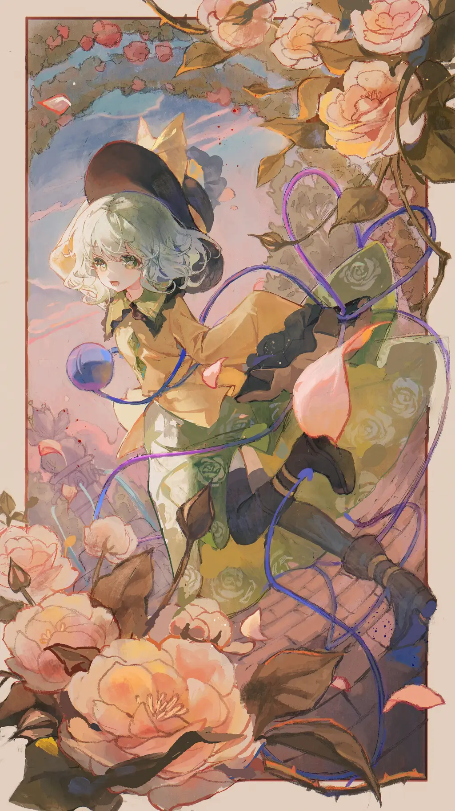 Рисунок сделан Matchach (@matchach) |
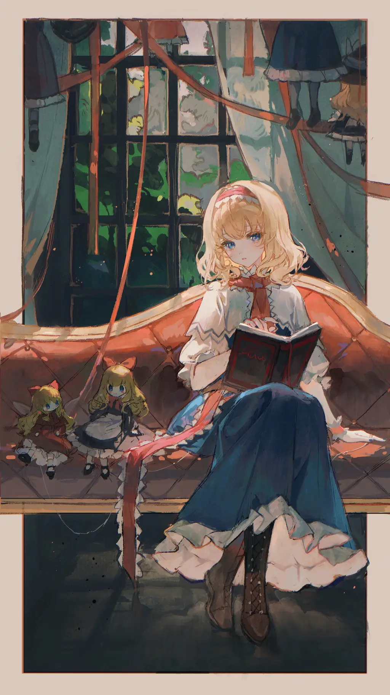 Рисунок сделан Matchach (@matchach) |
Иллюстрации: фан-арт сообщества, найдено на Zerochan